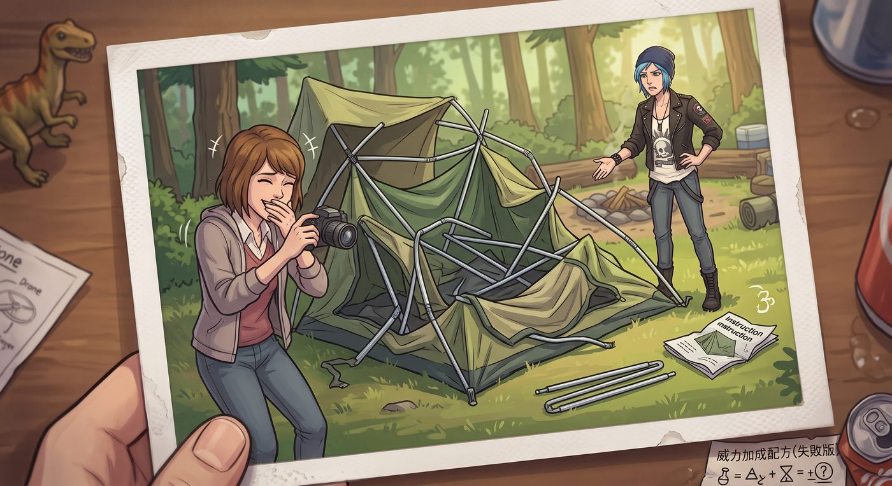

海岸線露營


一、朋克風危房
老皮卡沿著俄勒岡海岸公路顛簸了將近兩小時,終於在一片背靠松林、面朝大海的空地上停下。夕陽把整片海灣染成一片橘紅,浪濤聲隱約可聞。
「就這了。」Chloe 跳下車,伸了個懶腰,環顧四周,滿意地點點頭。
Max 從後座搬下裝備,順手把帳篷說明書遞過去:「妳要不要先看看——」
「不用,」Chloe 一把揮開那本說明書,語氣裡帶著十足的自信,「老娘連 V8 引擎都能拆,搞不定幾根鋁合金桿子?」
三十分鐘後,那頂帳篷的模樣,已經完全脫離了任何「帳篷」該有的範疇——外帳一角詭異地塌陷下去,支架歪七扭八地交叉著,整體造型活像一個被壓扁的捕獸夾。
「這……」Max 舉著相機,笑得肩膀直抖,「這是什麼新型的實驗藝術裝置?」
「閉嘴,」Chloe 滿頭大汗,惱羞成怒地一腳踹向鬆動的地釘,想強行把歪掉的支架調正——
「喀啦」一聲脆響,那根支架應聲折斷。
「……」
Max 憋著笑,終於還是伸出援手——她閉上眼,集中精神,一絲熟悉的清晰感短暫地掠過腦海,微弱的預兆讓她精準地看清了整個結構該有的正確順序。
「把那根桿子換個方向插,」她一邊指揮一邊接手,動作俐落地開始重新調整,「先固定四個角,再撐中間的橫桿,妳這是本末倒置了。」
十分鐘後,一頂端端正正、勉強稱得上「正常」的帳篷,終於在 Max 的強行接管下矗立起來。
Chloe 抱著手臂站在一旁,嘴硬地嘟囔:「我那是前衛的解構主義風格。」
「解構得挺徹底的,」Max 笑著拍下最後一張「搭建過程對比圖」,「這張照片,我要留著當傳家寶。」
二、生火與棉花糖火球
天色漸暗,兩人開始張羅生火。Chloe 翻遍工具箱,拎出一瓶打火機油和一罐化油器清洗劑,豪邁地就要往柴堆上倒。
「妳、妳等等——」Max 想阻止已經來不及。
「轟」的一聲,火苗猛地竄起老高,幾乎要撩到 Chloe 那頭藍色劉海,她嚇得慘叫一聲,連滾帶爬地往後退了好幾步。
「我的頭髮!」她驚魂未定地摸了摸劉海,確認毫髮無傷才鬆了口氣。
「我就說讓妳等一下,」Max 一邊笑一邊遞過去一瓶水,「妳這是想生火,還是想直接自焚?」
好不容易把火勢控制到正常大小,兩人開始烤棉花糖。Chloe 把她那顆棉花糖直接懟進火堆最旺的地方,不出十秒,那顆原本雪白蓬鬆的棉花糖,已經化作一團熊熊燃燒的黑炭火球,滴滴答答地往下淌著焦黑的殘渣。
「……」Chloe 舉著那根竹籤,一臉生無可戀。
Max 用鋁箔紙包著棉花糖,俐落地在火堆邊緣慢慢轉動,不多時,烤出一顆表皮呈現漂亮焦糖色、內裡軟糯的完美成品。
她看了眼 Chloe 那顆悲劇性的黑炭球,又看了眼她委屈巴巴的表情,笑著把自己那顆舉到她嘴邊。
「張嘴。」
Chloe 愣了一下,乖乖張嘴咬了一口,焦糖香甜的滋味在舌尖化開,原本的委屈瞬間被治癒。
「這才是正常的味道,」她含糊地嘟囔,「妳這技術哪學的?」
「多年觀察妳失敗經驗累積出來的智慧。」Max 得意地眨眨眼。
三、深夜的不速之客
半夜,帳篷外忽然傳來一陣窸窸窣窣的動靜,伴隨著某種塑膠袋摩擦的聲響。
Chloe 瞬間從睡袋裡彈坐起來,一把抓起放在手邊的扳手,擋在 Max 身前,擺出一副如臨大敵的架勢。
「別怕,」她壓低聲音,語氣裡帶著豁出去的狠勁,「誰敢動妳,我就跟牠拼命。」
Max 被她這副架勢逗得又緊張又想笑,悄悄拉開帳篷拉鏈一條縫,舉起手電筒朝外一照。
光束下,一隻圓滾滾的浣熊,正抱著一個他們沒收好的空薯片袋,吃得津津有味,絲毫沒被突如其來的燈光嚇到,只是抬頭無辜地眨了眨眼睛。
帳篷裡陷入一陣寂靜。
「……」Chloe 舉著扳手的手僵在半空。
Max 徹底繃不住了,笑倒在睡袋裡打滾,肩膀抖個不停,順手舉起相機,精準地按下快門,把 Chloe 那副如臨大敵、對手卻是一隻胖浣熊的滑稽畫面,永久定格了下來。
「這張,」她笑得直不起腰,「絕對是妳這輩子最威風凜凜的黑歷史照片之一。」
「閉嘴,」Chloe 悻悻然地把扳手扔到一邊,重新縮回睡袋,耳根有點發紅,「我這叫保持警覺。」
四、皮卡後斗的星空
折騰了大半夜,兩人索性把厚毛毯搬到皮卡後斗,擠進同一個特大號睡袋裡,望著頭頂的星空。
俄勒岡的海岸線,遠離城市光害,夜空乾淨得驚人,銀河的輪廓隱約可見,浪濤聲一下一下拍打著不遠處的礁石。
氣溫漸漸降到接近冰點,Chloe 毫無預警地把一雙冰涼的腳丫,貼到了 Max 的小腿上。
「唔!」Max 猛地一縮,倒吸一口涼氣,「妳這是什麼刑具!」
「取暖,」Chloe 理直氣壯,又往她身邊蹭了蹭,「妳是我的天然暖爐。」
兩人笑鬧著滾成一團,額頭抵著額頭,呼吸在冷空氣中凝結成同一團白霧,交疊纏繞。
五、篝火旁的低語
折騰累了,兩人重新坐回篝火邊,Chloe 抱著一把不知從哪淘來的舊吉他,漫不經心地撥弄著走調的和弦,Max 安靜地把頭靠在她肩上,鼻尖縈繞著她身上那股混合著機油和菸草的、熟悉的氣味。
彈了一會兒,Chloe 的手指忽然停了下來,聲音低了幾分。
「我有時候還是會做夢,」她望著跳動的火光,語氣有點飄忽,「夢到暗房,夢到風暴,夢到我爸——夢裡什麼都還沒改變,一切都還是最壞的那個版本。」
Max 沒有說話,只是伸手,輕輕撫過她頸後那幾縷凌亂的碎髮。
火光在她眼底跳動,她沒有選擇回溯任何東西,也沒有試圖用言語去掩蓋那份沉重——她只是靜靜地凑近,在篝火的微光裡,輕輕吻上 Chloe 的唇。
那個吻很輕,很慢,帶著真實的溫度,像是要把那些殘留在夢裡的陰霾,一點一點驅散。
Chloe 怔了一下,隨即闔上眼睛,回應了這個吻,吉他從她鬆開的手中滑落到毛毯上,發出一聲低沉的悶響,誰都沒有在意。
六、晨光中的賴床
清晨,湖面般寧靜的海面上飄著一層薄霧,帳篷外冷得刺骨。
Chloe 像隻樹懶一樣,死死把 Max 圈在懷裡,任憑陽光已經透過帳篷縫隙灑進來,依然賴著不肯起身。
「誰先動,」她把臉埋進 Max 的髮間,聲音還帶著濃濃的睡意,悶悶地宣布,「誰去煮咖啡。」
Max 縮在她溫暖的懷抱裡,透過帳篷布料的縫隙,望著第一縷晨光緩緩穿透遠處的松林,耳邊是 Chloe 那沉穩而規律的心跳聲。
沒有風暴,沒有暗房,沒有需要拯救的世界。
只有這一刻,平凡卻奢侈到近乎不真實的,寧靜。
「行吧,」過了許久,Max 才輕聲笑著開口,「我去煮咖啡。」
「就知道妳最好。」Chloe 滿意地鬆開手臂,眼睛卻還沒睜開,嘴角噙著一抹懶洋洋的笑意。